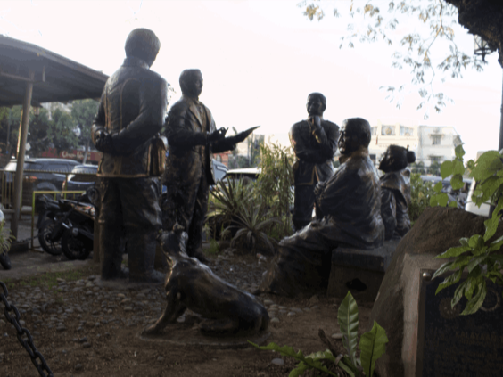

FROM BSU ➡️ STA. ISABEL CHURCH,
MALOLOS, BULACAN
Using this map, we drove off from Bulacan State University, Malolos, Bulacan campus all the way to Sta. Isabel Church in Malolos, Bulacan.

FROM BSU ➡️ KALAYAAN TREE (CATHEDRAL CHURCH),
MALOLOS, BULACAN
Using this map, we drove off from Bulacan State University, Malolos, Bulacan campus all the way to Kalayaan Tree, Cathedral Church in Malolos Bayan, Bulacan.

FROM BSU ➡️ BARASOAIN CHURCH,
MALOLOS BULACAN
Using this map, we drove off from Bulacan State University, Malolos, Bulacan campus all the way to Barasoain Church in Malolos, Bulacan.